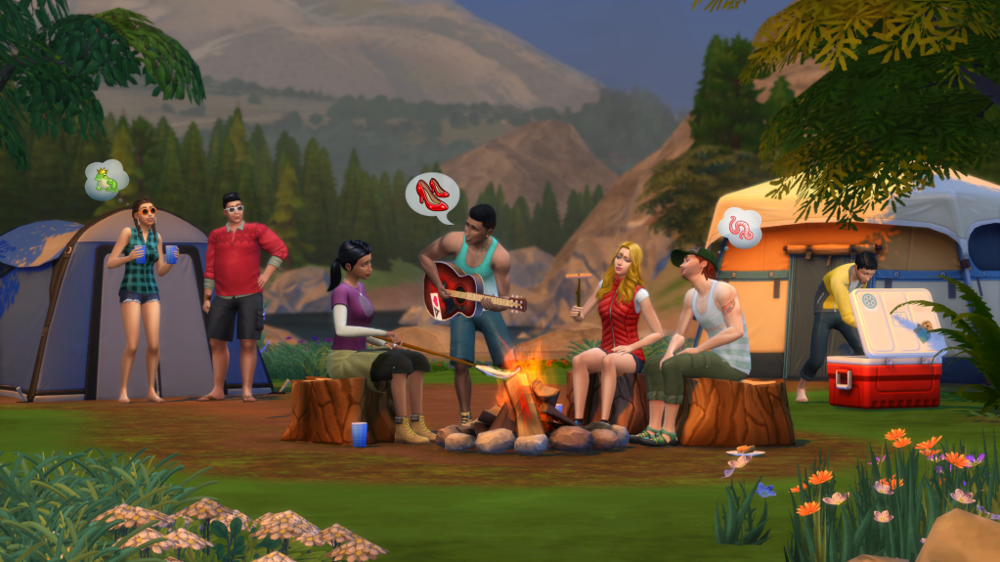
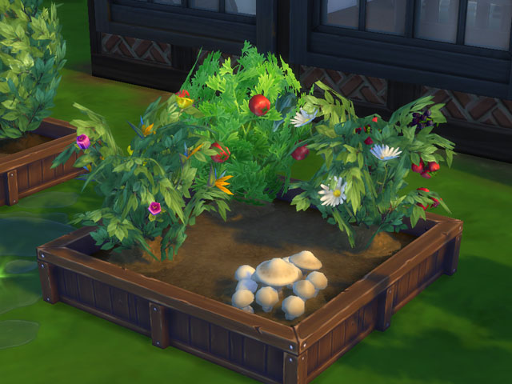
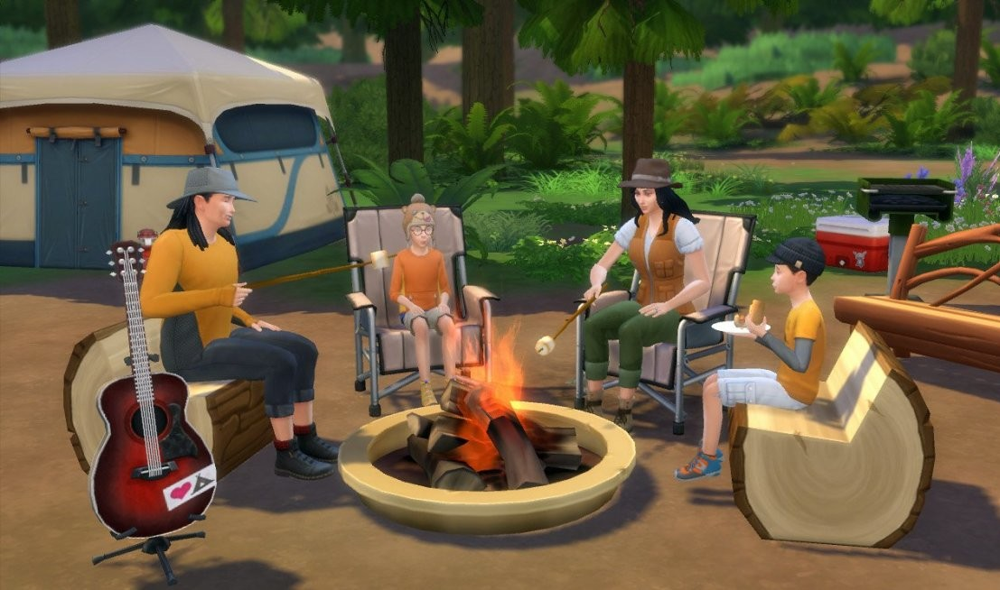

Свобода и природа
Дополнение "Волшебство природы" позволяет вашим симам жить в гармонии с природой, отказавшись от комфорта городской жизни.

Кемпинг
Разбивайте лагеря в лесах, устанавливайте палатки и наслаждайтесь природой.

Собирательство
Ищите съедобные растения, ягоды и грибы для пропитания.

Приготовление на костре
Готовьте простую, но вкусную еду на открытом огне.
Навыки выживания
Ваши симсы смогут развивать новые навыки:
- Выживание в природе: Умение находить пищу и укрытие
- Ориентирование: Навык не заблудиться в лесу
- Ручная работа: Создание инструментов из природных материалов
- Знание растений: Умение отличать съедобное от ядовитого